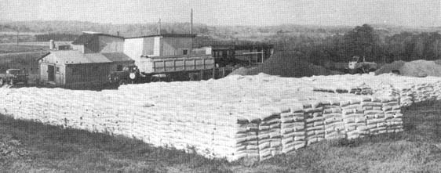
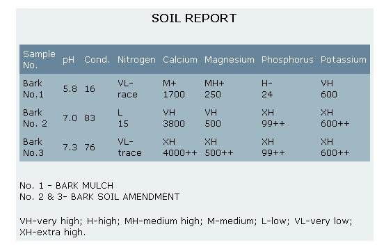
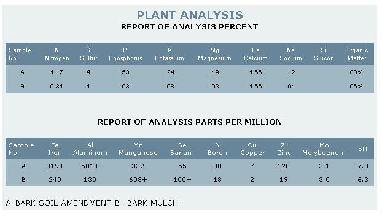

There Nate and Onnalee Morrell were in the wet spring of 1969: a not-so-young couple (born 1924 and 1935) married just a year . . . and newly moved from New Hampshire to an old 150-acre farm near Watertown, New York. As if that weren't enough change in their lives, Nate was also fresh out of a job after 17 years as a machinery salesman to the woodworking industry. It seems that he'd never been able to view grabbing a fast dollar as a measure of success . . . and the company he'd been with had finally told him he was just too honest for the firm's own good.
Well, then. It looked as if the fresh start the Morrells were making would have to include a new occupation for Nate. Oh sure, he could have just worked that 150 acres and experimented with new ideas in organic farming while Onnalee paid the bills with her full-time job as a registered nurse. The Morrells, however, knew that the plans they had for their farm would take more money than the nursing job could provide . . . and they also were feeling a vague but growing desire to commit themselves to a way of living in which they could really believe.
"We both felt very strongly about pure foods, privacy, conservation of resources, simplifying our surroundings and harming neither ourselves nor our fellow men," Nate says. "As we discussed these feelings, our belief in the land and organic farming methods continued to grow and we increasingly found ourselves thinking of ways to recycle waste into useful gardening products and, hence, into our own version of The Good Life. This almost immediately led us to thoughts of the tremendous amounts of bark which I'd seen the woodworking trade do little or nothing with over the years."
The lumber industry in general (not just the woodworking section) has traditionally looked upon its bark by-product as "waste" instead of "resource" . . . and done little to discover uses for the material. Little wonder, then, that the "scrap" almost always winds up as landfill or very poor boiler fuel. Even the recent attempts to market the material on the West Coast as a soil conditioner have been less than satisfactory (largely because only nitrogen, in chemical form, is added to the bark in varying amounts giving-as might be expected-varying results).
"But it doesn't have to be that way," Nate told Onnalee.
"Fifteen or twenty years ago I saw a researcher named John Sayward experiment with a bark-manure mixture in Vermont. The crops he grew with the help of that conditioner were good . . . so good that people wouldn't even believe the results and Sayward went back to his job of teaching."
The more the Morrells thought about Sayward's work, the more they wanted to pick up where he had left off. "What if we gathered large quantities of bark from the sawmills and mixed it-in controlled amounts-with the whey from cheese plants, the apple pomace from cider mills, the manure from poultry farms and the hay, straw and manure from cattle operations?" they asked themselves. "Surely-if we composted all that rich, organic material together-we'd come up with a superior natural soil conditioner."
After 90 days of soul-searching, Nate and Onnalee took the big leap. They borrowed money and formed NOMCO (a name that stands both for Nate and Onnalee Morrell Co. and Nature's Own Method Co.).
Over the next few months the couple bought a Mack truck, two dump trailers, a front-end loader, hoppers, conveyors, chip screen and hammermill. None of the equipment was new and none of it worked until the Morrells either rebuilt or modified it. Somehow they did manage to "balewire and binder twine" their tools together, however . . . well enough to produce a three-ton batch of their new, composted product. The initial run of soil conditioner was completed in their barn in the dead of the 1969-70 winter and christened B.S.A. (for Bark Soil Amendment).
And then the work began! The new gardening season was drawing nearer and-with no established sales outlets to handle B.S.A.-Nate was forced to hit the road to line up accounts for the product. That left Onnalee to hold down her nursing job and keep things on an even keel back home.
Both Morrells had their hands more than full: Many outlets hesitated to handle the as-yet-unproven soil conditioner. NOMCO's secondhand equipment continued to break down and malfunction. The special bags that Nate and Onnalee needed for packaging their product were late in arriving. Delivery dates were missed. Expenses climbed and income hardly got off Ground Zero.
The Morrells borrowed more money and continued to put every possible penny from Onnalee's job into the business. They experimented with different formulas for their soil conditioner, lined up more sources of raw material, replaced and rebuilt their tools and submitted samples of B.S.A. to laboratories and agricultural colleges for testing.
NOMCO's treatment at the hands of some of the land-grant university experimental stations and agricultural research centers is an especially sore point with Nate. He says, "The public maintains these facilities expressly for the purpose of developing and testing products such as ours and one would think that using such services is a perfectly straightforward procedure. Not at all! We've largely gotten the runaround when we've taken our bark product to the land-grant universities for analysis and testing."
Nate's low opinion of the current situation at many of the agricultural colleges does seem more than a little justified. There was the time, for instance, when the Morrells took a sample of their soil conditioner to the labs (stocked with a half-million dollars' worth of equipment) of one such institute. "Yes," they were told, "this station can analyze your product in the finest and most exacting manner."
"Splendid," replied the Morrells. "We'd like to have you do just that."
"Sorry. We can't. There's no money in the budget for your project."
"We'll be pleased to pay for the tests," said Onnalee and Nate.
"Oh no, we couldn't accept the money. As New York State taxpayers, you're entitled to the service at no charge."
"Well then, how do we apply for the analysis?"
"You can't. There's no money in the budget."
Onnalee-who is part Irish, redheaded and seldom at a loss for words-was left speechless by this "Catch-22" line of reasoning . . . and Nate was even more upset by the actions of another large, eastern, land-grant university.
The Vegetable Crop Department of the second school did accept a test sample of B.S.A.,then claimed the soil conditioner had been lost and advised the Morrells to "wait awhile" before submitting a new specimen. Imagine the couple's surprise over a year and a half later, then, when quite by by accident-Nate discovered that the sample had not been lost at all.l It had, in fact, placed first in germination, growth, color and yield in a test against 13 other products!
The Morrells, of course, could hardly believe that the experimental lab of a reputable university would tell them that it had lost their specimen, test the material . . . and then neglect to tell them that their product had proven superior to every other soil conditioner against which it was compared. They he believed it, though, when they visited the school and saw the test results in writing.
"Well, better late than never," says Nate. "Delayed as it was, the release of that test information proved to be the turning point in our venture. The university wouldn't let us use a, name in our advertising but it did offer to confirm the reports to anyone who called in a request. I had the Small Business Administration and our bank get a copy of the confidential report and-on the basis of the information it contained-borrowed more money to keep NOMCO afloat. Things have been picking up ever since."
Lest anyone get the impression that he's down on all land-grant colleges and research stations, Nate hastens to praise the ones that have taken pains to give the NOMCO soil conditioner impartial and unbiased tests. He has particularly warm feelings for Prof. Frank Campbell at the University of Maine's Waltham Field Station, where several experiments with the Morrell product are underway . . . for Dr. Walter Larmie, who-at the University of Rhode Island-has found that the NOMCO soil conditioner will help greenhouse flowers produce 19% more No. 1 blossoms that stay in bloom up to 10 times longer than untreated plants . . . and Dr. Richard Ashley of the University of Connecticut who-after adding the Morrell product to test plots to improve drainage-said, "No matter what I did, I couldn't make it go wrong!"
"These men could have refused us also," Nate says, "but, instead, agreed to try our soil conditioner and give us a full report with no strings attached. They're a credit to the original intent of the whole land-grant college concept."
While the Morrells were struggling with the problems of distribution, biased tests, secondhand equipment and all the other setbacks faced by any small, new business . . . they were also refining their B.S.A. formula.
"Our soil conditioner is essentially earth," Nate explains, "the closest equivalent we can create to the rich humus that builds up on the forest floor at the rate of one inch of topsoil in 300 years. At NOMCO, we simply speed up nature's method by processing and composting a combination of industrial organic wastes that are plentiful in our area.
"We try to use the purest products available. Our whey comes from the raw-milk cheese produced by the Heath Cheese Plant in East Rodman, New York. The apple pomace we use is from Homer Rebb's Burrville, New York cider mill. We get it because Homer has designed a special washer that cleans each fruit before it's pressed and we feel that anything from his mill contains the least possible residual contamination.
"Although our poultry manure does come from an egg ranch, the stilbesterol and hormones and arsenic added to the birds' feed to stimulate production is much less now than it was two years ago. The level of contamination from this source is certainly not down to zero yet, but it is acceptable.
"We refuse to buy hay and straw from any farmer who applies 2-4-D or 2-4-5T to his oats for mustard control and we will not use manure from veal operations because the drugs fed to such calves in their highly medicated milk substitutes can upset the soil's microorganisms."
The hardwood bark, apple pomace, cheese whey, poultry manure, beef manure, hay and straw are mixed together in a special "secret" blend and then composted by NOMCO under cover. Weather does make a difference in the composting time but-under ideal conditions-a batch is finished in 30 days. The resulting product is an excellent growing medium which improves the tilth of the soil, contributes many valuable trace minerals to the earth and enriches the dirt to which it's applied by a slow decomposition (for up to seven years under ideal conditions) of new organic matter.
One of the two analyses reproduced with this article gives the B.S.A. composition in parts per million (as if it were chemical fertilizer) and the other is a soil test which shows that the conditioner contains an abundance of every element required for good plant growth, with the exception of nitrogen. Tests have shown that when B.S.A. is used outdoors, enough nitrogen is usually naturally present to make up for this single deficiency (common to many composted "natural" fertilizers). If the soil amendment is mixed with a soilless growing medium (such as vermiculite), however, NOMCO recommends that blood meal or some other natural source of nitrogen be added. Commercial growers have been very successful with a slow-release or liquid-feed type of fertilizer for this purpose.
At the same time the Morrells were standardizing their B.S.A., they were developing a second bark product . . . although not quite exactly the product they intended. As Nate recalls, "Our original notion of manufacturing bark nuggets as well as soil amendment was given up when we found that the local bark doesn't process well in nugget form. Our machinery couldn't handle the job anyhow... so, instead of nuggets, we now make a mulch by fibrating bark into a fine material. The woody part remains fibrous and forms a porous mat that holds the mulch in place on the ground where the finer particles retain moisture and inhibit weed growth."
As Nate and Onnalee were smoothing the final kinks out of both NOMCO products, they made the acquaintance of Don and Judy Buckley of Canaan, Connecticut. Don, a retired ad vertising man, and Judy are staunch advocates of organic gardening and Don has written a soon-to-be-published book, Ad Man In The Garden Of Eden, about their experiences with natural methods of raising fruit and vegetables. The Buckleys are also deeply concerned about the thousands of birth defects and cases of leukemia which some scientists have traced to the low-level radiation produced by "peaceful" uses of atomic energy (see Dr. Ernest J. Sternglass's book, Low Level Radiation, published by Ballantine Books), and have established the Bucks Foundation for the Survival of Man to study the problem.
Given the Buckleys' interest in natural methods of gardening and living, it's hardly surprising that they became enthusiastic supporters of Nate's and Onnalee's soil conditioner and bark mulch. Don even took the time and effort to rename and register the products as BARSOLA and BARMULCH and write advertising copy, an industrial user's newsletter and instruction sheets for the NOMCO items.
With this fresh image, the Morrell company began to pick up new dealers and customers and now appears-for the first time-to be headed for the solid success it deserves. Nate and Onnalee (still over their heads in debt) have started patent proceedings and hope that they'll soon interest other firms in producing BARSOLA and BARMULCH under NOMCO licensing arrangements. They emphasize, however, that they're not interested in working with companies that are only out after a fast dollar . . . the Morrells are looking for firms that will-first and foremost-take the pains that NOMCO takes to make its products the best that they can possibly be. With that philosophy leading the way, Nate and Onnalee believe, the money will just naturally follow.
And what do the Morrells do in their spare time? Spread the word about natural composting and recycling, of course! They feel that they've learned much of value since they founded NOMCO and they're currently trying to share that knowledge for the public good by helping towns and cities set up garbage composting operations of their own.
Nate is also one of the directors of the Natural Foods Association of New York, an organization that has just voted $10,000 to start a research program that will allow a landgrant college to compare the results of chemical, semi-chemical and organic farming over a period of time.
This eagerness to help others (even-in the case of the city composting operations-at the risk of setting up competition for their own company) is just another measure of the depth of the commitment made four years ago by the Morrells. Although they're now deeper in, debt than they'd ever thought possible, they're more convinced than ever that their efforts will work out to a better life for everyone involved. That seems to be enough to keep the couple's attention directed firmly ahead.
Perhaps the Morrells' feelings were best summed up at one of NOMCO's many low points when Nate asked Onnalee, "What'll we do if we go broke and lose everything?" Her answer was straightforward: "Start over!"
|
 IT AIN'T EASY... BUT IF YOU REALLY WANT TOO BUILD A NEW LIFE AND FOUND A BUSINESS IN ORGANICS, IT CAN BE DONE. |
 |
 |